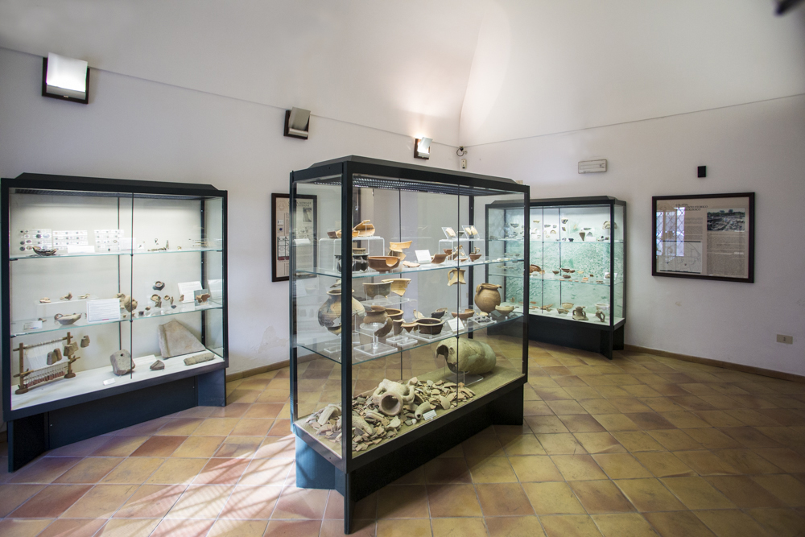

Home |
Le federazioni osche |
Localizzazione musei e siti |
Chi siamo |
Dove trovarci |
Reperti risalenti al periodo compreso tra VIII secolo ed età romana raccontano la storia di Calatia, piccolo centro osco ai margini della pianura campana, nel Museo Archeologico Nazionale dell’antica Calazia, odierna Maddaloni in provincia di Caserta.
|
 |